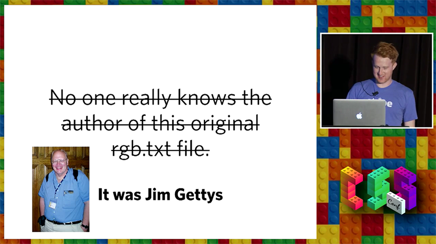

María Evangelina Ferreira Kuzminski
- UI Developer at Aerolab
- CSSConf Argentina Team
- Likes design but it's a terrible designer
When I was 14...
Turbo Pascal
Turbo Pascal for a 14 yrs old
- Useless
- Old
- Boring
It made me hate programming
In the meantime...
Blogging
& attending Computer Clubhouse (NGO)
Puerta 18
- 3D Graphics
- Traditional Animation
- Lego Mindstorms
- Scratch
- Adobe Flash
- HTML and PHP websites
Code Interfaces
Eureka!
Color is code.
Color on the web
A long time ago, HTML was created
Tim
The folk lived happy for a while
But a rebellion was imminent.

The webmasters wanted more.
<Font> Tag
Håkon
Bert
CSS saved the day
Color in CSS
Past, present & future
CSS 1 (1996)
- Color with names (16 available)
- RGB in Hexadecimal
- RGB in Decimal
Color with names
Windows VGA Palette
Aqua, black, blue, fuchsia, gray, green, lime, maroon, navy, olive, purple, red, silver, teal, white, and yellow
RGB
- Hexadecimal: #FF0000
- Decimal: rgb(255, 0, 0)
- Decimal with %: rgb(100%, 0%, 0%)
CSS 2

And... That's it.
CSS 3 (2001)
- Orange is dead
- Long live orange
- + 147 X11 colors

Some of it was great
Some X11 color names
- Orange
- Brown
- Chocolate
- Beige
- Violet
- Gray
- Grey
Some of it was nonsense
WTF, chocolate?!
Aqua === Cyan
Gray is darker than darkGray
ghostWhite is not scary :/
Who is Sandy Brown?!
Peru is country!!

Tan? Really?!
Lack of consistency
Lack of consistency
- navajoWhite is not white
- maroon looks reddish
- lightBlue, Blue, mediumBlue and darkBlue
- But only red and darkRed
- ¯\_(ツ)_/¯
The one I'm really angry about
- There's skyBlue
- But no hellRed
If they are so bad, why are they still here?
“ They’re not efficient, or super intuitive, but there is something downright charming about using these great names. ” - Stranger on the Internet
Alex Sexton - CSSConf US 2014
Color with names
- Not Specific
- Fun to use (:
What else is there?
Hexadecimal
From 0 to 9 & A to F
Hex values
- 3 digits #RGB
- 6 digits #RRGGBB
Hex with alpha
- 4 digits #RGBA (Beware!!)
- 8 digits #RRGGBBAA
They also have funny names!
#C0FFEE
#C0BFEFEE ?
#CA7
#BADA55
#F1E57A
How does Fiesta look like? (#F1E57A)
- Greenish
- Yellowish
- Redish
#F1E57A
Hexadecimal
- Specific
- Hard to remember
- Hard to modify
Decimal RGB
Decimal RGB/A
- Specific
- Hard to remember
- Hard to modify
- Alpha works everywhere
HSL
HSL/A
- Hue ('color')
- Saturation
- Lightness
Hue is a circle, so it takes degrees
.el{
background-color: hsl(270, 60%, 60%);
}
HSL
Same saturación, misma luminosidad
HSL
Transitions
Animations
Animations
HSL/A
- Specific
- Alpha works everywhere
- Hard to remember
- Easy to modify
- Ideal for transitions & animations
That's all for CSS Color Level 3!
To the future!
CSS Color Level 4
CSS Color Level 4
- HWB
- lab & lch
- gray
- color
WAIT!
Why so many?
Why not?

CSS Color Level 4
- Theming
- Customization
- Device-independent colors
- A11y
CSS Color Level 4
- HWB
- lab & lch
- gray
- color
- Optional commas
Optional commas
Optional commas
.el{
color: rgb(255 0 0 / 20%);
}